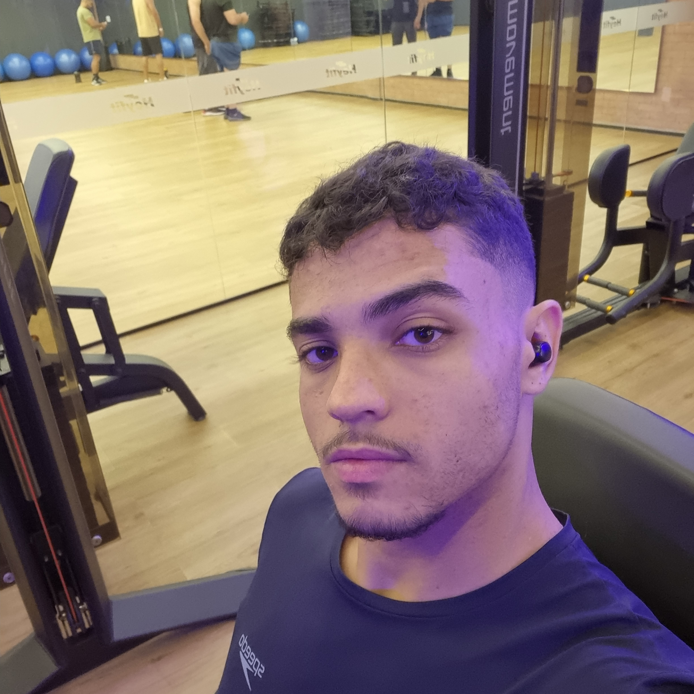

Lucas de Almeida Borges

Natural de Vitória da Conquista, atualmente tenho 20 anos e sou estudante de Engenharia de Software, na Universidade Católica do Salvador (UCSal), cursando o 1° semestre.
O meu interesse pela área de TI veio inicialmente pela paixão pelos softwares, a forma como as máquinas são inteligentes e este avanço tecnológico constante... Queria entender como funcionava o "por trás da tela".
Ao ingressar na faculdade, comecei a buscar por cursos on-lines de programção, para adquirir as noções básicas, descobrindo assim a linguagem C#.
Considero que foi uma ótima experiência, já que comecei a entender como algumas coisas funcionavam e acabou despertando uma curiosidade constante para aprender cada vez mais.
Na minha busca por novos conhecimentos, algo me despertou a curiosidade com relação à interface de uma plataforma digital, me surgindo a oportunidade de ingressar em um curso de Front-End onde vou aprender HTML,
CSS e JavaScript.